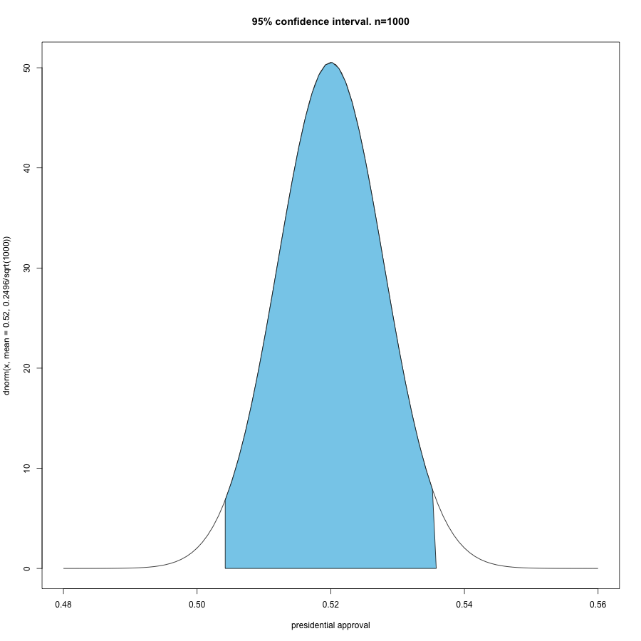

A very short lecture on..

THE CENTRAL LIMIT THEOREM
Nicola Barban
University of Groningen
n.barban@rug.nl
The magic of
statistics
.... Using small samples to study large populations


US electoral polls
- Most of the opinion polls are based on only 1,000 people
- But... the US population in 2012 was 319,000,000!
How is this possible?
... because of the
Central Limit Theorem (CLT)


- De Moivre (1667 -1754) was the first to use the normal distribution to approximate the distribution of the number of heads resulting from many tosses of a coin
- Aleksandr Lyapunov (1857-1918) defined it in general terms and proved precisely how it worked mathematically
- George Pólya (1887 - 1985) first used the term "central limit theorem" due to its importance in probability theory.
What the CLT says?
the means of random samples drawn from any distribution with mean $m$ and variance $s^2$ will have an approximately normal distribution with a mean equal to $m$ and a variance equal to $s^2/n$ .
... Whenever a large sample of chaotic elements are taken in hand and marshaled in the order of their magnitude, an unsuspected and most beautiful form of regularity proves to have been latent all along.
Opinion polls
- The real presidential approval in the population is 52% (m=0.52), with a standard deviation of $s$= 0.062
- Then the mean presidential approval can be approximated by a normal distribution (bell curve)
\[ \bar{m} \sim N(\mu, \sigma^2}\slash {n}) \]

so... how much is the presidential approval?
Using the CLT we are 95% confident that the presidential approval is:
- [43%-60%] with a sample size of n=30
- [47%-57%] with a sample size of n=100
- [50.5%-53.5%] with a sample size of n=1000
-
[50.9%-53.1%] with a sample size of n=2000

Rhode Island
Suppose you want to conduct an electoral poll in Rhode Island,
the smaller state in US (1,050,292 inhabitants).
How many people should you interview?

Solution:
It depends on:
- the precision you want (the confidence interval)
- the variability of the "true" value
- how confident you want to be about your estimation
BUT NOT ON THE SIZE OF THE POPULATION!
Suppose:
- $\pm$ 3%
- use as "true" variance 0.25 (conservative) $var(Bern(p))=p(1-p)$
- You accept a 5% false positive error
using a simple formula$n=p(1-p) (\ \frac{Z_c}{E}) \)^2$n$\approx$ 1,067
What do we need:
- Random Sample. Polls company are much more concern on the randomness of the respondents. (see for example how Gallup select their samples)
- Observations must be independent. For example, not member of the same family
- The sample size must be sufficiently large.
- The mean of the sample approaches the mean of the population
- the mean distributes as as a normal distribution when N>30
THE CLT is the main reason that justifies most of the statistical inference.